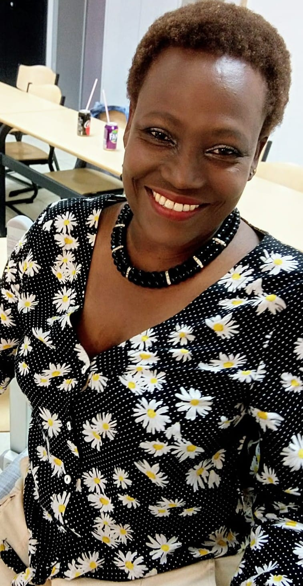

A celles et ceux qui me liront, je vous adresse mes chaleureuses
salutations, non seulement de la part de l'enfant et de
l'adolescente que je fus, mais surtout de la femme accomplie que
je suis devenue aujourd'hui, actrice de ma propre vie.
Enfance brisée
La découverte de mon adoption a déclenché en moi une tempête
d'émotions, je me suis sentie à la fois trahie et indésirable. Ma
mère adoptive m'avait caché cette vérité, et mes parents
biologiques m'avaient, dans mon esprit, simplement abandonnée.
Un sentiment d'abandon
À l'âge où l'on atteint la maturité et la lucidité, j'ai compris
avec désolation que je n'étais pas qu'orpheline, mais en plus que
j'étais sans famille et que mes racines m'étaient totalement
inconnues !
Peut-être que ma mère se trouvait quelque part, avec ou sans
remords, et qu'elle continuait à mener sa vie, peut-être qu'elle
était réellement morte ! Une chose est sûre, je suis née à la
maternité de l'hôpital Prince Régent Charles à Bujumbura dans les
années 60.
Souvenirs douloureux
Souvent, je dormais recroquevillée sur le seuil de la porte où « ma
mère » avait souvent l'habitude de me laisser pour me punir – je ne
sais pour quelle faute – pour mériter des nuits de frayeur !
Heureusement pour moi, il n'y avait pas de loups à Bujumbura !
Oui, j'étais une enfant battue, une enfant martyr. Quand je jouais
dans une carcasse de vieille voiture avec des petits garçons de mon
âge, nous avions à peine 6 ans, elle m'extirpait de là manu militari
et commençait à me brûler la face interne des cuisses avec des
mégots en me disant que je ne devrais pas jouer avec les garçons.
C'était horrible !
Les nuits dehors se suivaient et se ressemblaient. Aujourd'hui,
lorsque je me promène dans les interminables rues de Bujumbura, je
vois des ribambelles d'enfants qui vivent dans la rue, souvent en
bandes. Certains ont l'âge que j'avais. J'ignore quel sort les a
emmenés là ; à mon époque, les enfants de rue n'existaient pas.
Égoïstement, j'aurais aimé avoir un petit compagnon de nuit pour
m'aider à compter les étoiles dans le ciel, histoire d'oublier un
instant un danger qui pouvait surgir de nulle part.
La découverte de la vérité
Un soir, réveillée dans l'obscurité d'une nuit sans étoiles par les
pas d'une dame voisine, lampe à pétrole à la main pour s'éclairer
vers la seule toilette commune, j'ai entendu ses murmures audibles
en swahili (mes voisins à Bwiza étaient tous des Congolais) : «
Humm, on voit bien pourquoi elle maltraite ce pauvre enfant, c'est
parce que ce n'est pas le sien !» J'ai compris et appris que ma mère
n'était pas ma mère.
Je ne sais pas comment elle l'avait appris, mais qu'à cela ne
tienne, le ciel venait d'être témoin d'une triste et amère
révélation. Depuis cette nuit, dans la tête de la petite enfant que
j'étais, tout a basculé. Pourtant, cette dame avec sa lampe à
pétrole qui compatissait de me voir là, ni elle ni les autres
voisins n'ont jamais pensé à me prendre dans leur maison pour
m'allonger sur une petite natte, histoire de me réchauffer le cœur
l'espace d'une nuit, alors que j'avais l'âge de leurs enfants. Petit
à petit, j'ai compris que mes malheurs étaient ceux d'un autre et ne
touchaient personne, même si la compassion n'a jamais aidé personne,
un geste minime fût-il…
L'orphelinat
Vers l'âge de 10 ans, l'assistante sociale de l'école Notre-Dame et
la seule personne que je soupçonne de connaître ma vraie histoire
(l'institutrice apparentée à ma mère adoptive qui refuse toujours de
me renseigner pour des raisons que je préfère taire) ont statué sur
mon sort et décidé de m'arracher à ma mère adoptive. Elles m'ont
envoyé à l'orphelinat avec l'accord des autorités. J'étais triste de
devoir la quitter malgré la souffrance qu'elle m'infligeait. Je
l'aimais, c'était ma mère, je ne connaissais qu'elle.
Certaines femmes ou mères détournaient leur regard devant leurs
enfants lorsque nous passions en groupe, habillés en uniforme,
reconnaissables au loin parce que obligés d'emprunter toujours le
même chemin qui nous menait à la messe du dimanche pour implorer
secrètement Dieu de nous ramener nos parents ? Ses voies restaient
pourtant impénétrables. Ces mêmes femmes crachaient par terre à
défaut de cracher sur nous en disant « ehe za mpfuvyi » comme si on
avait choisi d'être orphelins !
Un nom lourd à porter
Comme si cela ne suffisait pas, Imelda m'a donné le nom de
NZIKOBANYANKA (je sais qu'on me déteste). Ce nom était trop lourd à
porter pour un enfant orphelin ou abandonné. Il a été un fardeau
tout au long de mon existence, mais aujourd'hui, j'ai appris à le
supporter, à l'apprivoiser. Il m'a accompagnée, et je l'accepte
désormais.
Pardonner pour avancer
Toutes ces horreurs que j'ai vécues sont gravées dans ma mémoire
d'enfant. Je n'ai rien oublié, même l'âge n'a pas effacé ces
souvenirs. Cependant, j'ai réussi à pardonner afin de pouvoir vivre
en paix avec moi-même et avec le monde qui m'entoure.
À la recherche de mes origines
Pour faire un enfant, il faut être deux. Curieusement, je n'ai
jamais ressenti un manque de père. Toutes mes pensées tristes me
ramenaient toujours à ma mère. L'enfant est toujours lié à sa mère
par le cordon ombilical, et ce lien ne se rompt jamais !
Un choix difficile
Ne voulant pas souffrir davantage, j'ai tout refoulé. Je n'ai pas
cherché mes parents biologiques de peur d'avoir des surprises.
Lorsque j'étais prête à accepter de connaître mon histoire, c'était
trop tard. Toutes les personnes qui auraient pu me renseigner
étaient déjà décédées. Heureusement pour moi, la nature m'a dotée
d'une joie de vivre et d'une force mentale qui m'ont permis, non pas
de me résigner, mais d'accepter ma condition. Très tôt, j'ai pris la
vie avec légèreté, car c'était ma destinée.
Un message d'espoir
Aujourd'hui, adulte accomplie, le vécu de mon enfance est derrière
moi. Le passé m'a toujours aidée à avancer et à devenir la personne
que je suis. J'ai choisi de ne pas avoir d'enfants, mais j'aide les
autres à ma façon. L'honnêteté, la justice, la tolérance et la
compréhension de l'autre restent mes valeurs principales.
Nulle loi au monde n'a le droit de priver un enfant de connaître ses
parents, quelles que soient les circonstances entourant sa
naissance. Par ailleurs, je conseille aux enfants adoptés,
abandonnés ou placés de chercher leurs parents biologiques tant
qu'il est encore temps. Dans ma profession d'infirmière, je
rencontre souvent des enfants adoptés qui ne veulent pas connaître
leurs origines. Je les comprends, mais c'est dommage !
Mon message pour les orphelins
Je ne me plains jamais de mon sort et je refuse la pitié. Je trouve
que j'ai eu beaucoup de chance comparée à beaucoup d'enfants qui ont
grandi comme moi. En tant qu'infirmière, je côtoie la misère
humaine, la souffrance morale et physique. Je m'en suis bien sortie
et je suis fière de la personne que je suis devenue. Merci la vie !

À côté de toutes ces expériences malheureuses vécues et que des
milliers d'enfants abandonnés accueillis ou adoptés continuent à
subir, il y a des femmes et des hommes au cœur immense qui ne
demandent qu'à le partager avec un petit bout d'innocent qui n'a
qu'un sourire à offrir.
Un appel à l'action
Je remercie Vinciane et son association qui m'ont demandé de
témoigner. Je voudrais également souligner la difficulté de leur
action qui consiste à aider les enfants à retrouver leurs origines
et leurs parents.
Je pourrais écrire des pages et des pages entières, mais je me suis
limitée pour ne pas lasser le lecteur, comme je l'ai déjà évoqué.
Comme le chanteur Jean-Jacques Goldman l'a si bien chanté dans sa
magnifique chanson : "Le monde a ses malheurs, ses douleurs qui ne
te touchent, qui ne me touchent, qui ne les touchent plus..." Que la
providence bénisse l'action de Hobe Kibondo "Panser les blessures de
la séparation".
Conclusion
Mon témoignage n'est qu'une histoire parmi tant d'autres. Il a pour
but de sensibiliser le public à la souffrance des enfants abandonnés
et orphelins, et de rappeler l'importance du respect des droits
fondamentaux de tous les enfants, y compris le droit de connaître
leurs origines. J'espère que mon histoire incitera les gens à
adopter, à soutenir les orphelinats et les associations qui aident
les enfants à retrouver leurs familles, et à lutter contre l'abandon
et la maltraitance des enfants.
N'oubliez jamais : chaque enfant mérite d'être aimé et protégé.
À tous les orphelins ou les enfants abandonnés, soyez forts ! On peut
vivre sans famille, sans parents, j'en suis l'exemple. Trouvez juste
votre chemin et surtout soyez reconnaissants à la vie.